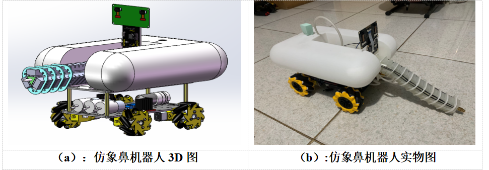

仿象鼻机器人是一种由柔性材料制成的新型装置，如图所示。主体材料为硅胶与碳纤维，在大大提升工作性能的 同时还满足环保可持续 的要求。其自 身多冗余自由度的结构和特殊的 软体材料使其具有高灵活性、复杂环境适应性、安全人机交互性等特点。
产品介绍


本仿象鼻软体可通过气动系统对不同气室充气来模仿象鼻肌肉的发力，使得软体结构完成弯曲、旋转等复杂动作，如 图所示。仿象鼻软体主要由两部分组成——强柔性驱动结构与高承载刚性骨架。这一特性使得本产品可以完成复杂的浇花动作 根据花需要水的程度，进行不同位置的针对性浇花